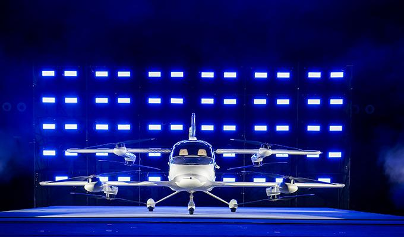
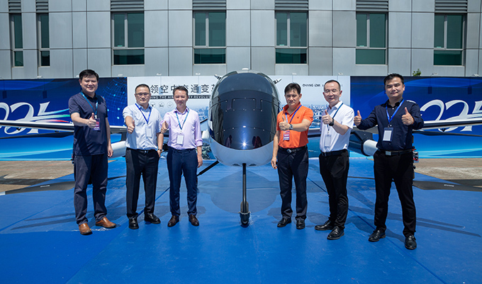

00 执行摘要Executive Summary
VT35 是亿航智能控股有限公司（Nasdaq: EH）于 2025 年 10 月 13 日在合肥骆岗公园全球首发的新一代长航程无人驾驶载人电动垂直起降航空器（eVTOL），基于前代 VT-30 原型机升级优化，采用串列翼双座布局、8 个分布式升力螺旋桨加 1 个尾推桨的复合翼构型，面向跨城市、跨海湾、跨山区等中长途点对点场景[2][4]。其型号合格证（TC）申请已于 2025 年 3 月获中国民航局受理，目前处于审定进行中状态[2]。
The VT35 is EHang's long-range pilotless passenger eVTOL, unveiled in Hefei on 13 October 2025. It is a tandem-wing, two-seat lift-and-cruise aircraft with eight lift propellers and one pusher propeller; its Type Certificate application was accepted by CAAC in March 2025 and remains under review.
本报告依据课程讲授的安全系统工程（Safety Systems Engineering, SSE）框架，从被动安全、功能安全、预期功能安全（SOTIF）、行为安全、信息安全五个层次，结合可靠性、可用性、维修性、安全性（RAMS）要求，对 VT35 开展概念阶段的全方位安全分析[13]。
01 研究边界与证据方法Method, Evidence and Scope
1.1 研究对象与排除项
- 研究对象：亿航智能 VT35 长航程复合翼载人 eVTOL。
- 排除项：216 系列（EH216-S/F/L/M 等）不作为本报告分析对象，仅在适航先例对照处引用其审定历程[7]。
- 分析阶段：概念阶段与系统阶段的安全开发梳理，不替代局方审定、独立评估机构的安全评估或整机适航审查。
1.2 证据分级
| 级别 | 来源类别 | 在本报告中的用途 |
|---|---|---|
| A 官方披露 | 亿航智能产品页、首发新闻稿、全球发布稿[1][2][3] | 构型、公开参数、官方安全设计口径 |
| B 第三方报道 | 澎湃新闻等媒体报道[4] | 首发时间、市场指导价、公开试飞事件的交叉核对 |
| C 标准与课程讲义 | ISO 26262、ISO 21448、ISO/SAE 21434、SAE ARP 4754/4761、MIL-STD-882E、课程第五章[8][9][10][11][13] | 安全分析方法、分层框架与审定要求基线 |
| D 待验证 | 官方未披露的冗余数量、失效概率、热安全指标、维护周期、故障注入与仿真验证结果 | 一律标注“待验证”，不作推断或数值补全 |
1.3 方法映射
课程框架给出的安全分析方法链包括：危害分析与风险评估（HARA）、失效模式与影响分析（FMEA）、故障树分析（FTA）、系统理论过程分析（STPA）、威胁分析与风险评估（TARA）[13]。本报告按“安全分析 → 安全需求 → 安全措施（开发、实现、验证与确认）→ 安全论证”的顺序组织内容；受公开信息限制，报告完成的是危险清单与证据缺口梳理，具体定量分析需在机型详细设计与审定阶段由研制方和局方完成。
02 安全对象与运行剖面Safety Object and Mission Profile
2.1 公开平台参数
| 项目 | 公开口径 | 证据状态 |
|---|---|---|
| 机长 / 翼展 / 机高 | 8.26 m / 8.16 m / 3.09 m | 官方产品页[1] |
| 有效载荷 | ≥200 kg | 官方产品页[1] |
| 经济巡航速度 | ≥216 km/h | 官方产品页[1] |
| 推进布局 | 8 升力螺旋桨 + 1 尾推桨 + 固定串列翼 | 官方产品页[1] |
| 指导价（中国标准版） | 650 万元人民币 | 发布会公开报道[4] |
| 审定状态 | TC 申请已受理，审定进行中；PC / OC / AC 未取得 | 新闻稿与适航历程[2][7] |
2.2 任务剖面与典型危险
按复合翼航空器的一般飞行过程，VT35 的一次任务可划分为五个阶段，各阶段的安全关注重点不同：
| 飞行阶段 | 典型动作 | 主要安全关注 |
|---|---|---|
| 地面与起飞准备 | 登机、系统自检、桨叶与站位确认 | 地面人员进入危险区、舱门约束、上电与电池状态确认 |
| 垂直起降 | 离地、悬停、姿态保持 | 升力桨/电机失效、推力不对称、地面效应与气流扰动 |
| 转换过渡 | 旋翼停转或减速、机翼承力、姿态与推力重新分配 | 过渡段控制律稳定性、动力重新匹配、姿态失控风险 |
| 巡航飞行 | 固定翼航线飞行、导航与避障 | 航路障碍与空域冲突、气象偏离、通信链路状态 |
| 进近与着陆 | 下降、对准、垂直着陆、滑停 | 下沉率控制、着陆误差、复飞决策、复飞动力裕度 |
2.3 暴露人群与初步运行边界
- 机上人员：2 名串列乘员，无随机驾驶员，飞行由飞控系统与远程监管共同保障[1]。
- 地面第三方：起降场周边人员、建筑物与财产；飞行器一旦出现坠地、失控或部件脱落，后果由地面第三方承担。
- 运行环境（ODD 初步界定）：官方口径指向城际、海湾、山区点对点航线；具体风速包线、能见度、降水、结冰、夜间与低光运行边界尚未公开，本报告不替其划定可安全运行的环境范围。
03 安全系统工程框架Safety Systems Engineering Framework
课程讲义指出，安全系统工程在系统工程基础上专门处理可靠性、可用性、维修性与安全性（RAMS）；面向自动运载工具的安全开发，由内而外分为五个安全层次，每层对应不同的风险来源、分析方法与标准基线[13]。
| 层次 | 风险来源 | 方法与标准基线 | VT35 公开可观察状态 |
|---|---|---|---|
| 被动安全 | 坠撞、磕碰、外部物体侵入对乘员与第三方的伤害 | 结构耐撞性、约束系统、乘员伤害指标；航空结构强度规范 | 采用碳纤维复合材料、航空铝合金与钛合金[1]；耐坠/耐撞指标与约束系统细节待验证 |
| 功能安全 | 电子电气软硬件故障、单点失效 | ISO 26262；安全分析、等级分解、安全机制；故障探测与回安全状态[8] | 官方称飞控、动力、航电多重备份、规避单点失效[1]；冗余通道数与等级分解待验证 |
| 预期功能安全 | 感知/决策性能不足、环境超出边界、可预见误用 | ISO 21448（SOTIF）；场景识别、限制措施与验证证据[9] | 多源感知融合、实时避障为官方口径[1]；探测距离、场景覆盖与局限边界待验证 |
| 行为安全 | 与其他航空器、地面人员、起降场周边的交互 | 安全间距、避让规则、路权假设；IEEE P2846 类行为假设参考[13] | 远程监管与集群调度为官方口径[1]；交互规则与空域协同程序待验证 |
| 信息安全 | 链路入侵、软件篡改、电磁干扰 | ISO/SAE 21434；TARA；软件更新管理；电磁兼容[10] | 公开材料未披露加密、认证与防护细节，待验证 |
3.1 安全工程链与航空方法基线
安全分析
- HARA / FMEA / FTA / STPA / TARA
- 识别危险事件与触发条件
安全需求与措施
- 分层安全需求分配到系统与组件
- 备份、降级、探测、隔离机制
- 开发实现并开展验证与确认
安全论证
- 安全案例：任务边界、危险清单、风险接受原则、残余风险说明
- 航空参照：SAE ARP 4754 / 4761、MIL-STD-882E、DO-178 / DO-254[11]
04 危害识别与风险分级Hazard Identification and Risk Classification
下表按九个风险域列出 VT35 概念阶段需要识别的典型危害、官方已披露的设计对策，以及仍需补全的验证证据。表中“公开对策”仅为官方口径转述，不等同于已通过审定验证。
| 风险域 | 可能危害 | 公开对策（官方口径） | 关键待验证证据 |
|---|---|---|---|
| 动力与推进 | 单个升力桨/电机失效、尾推桨卡滞、推力不对称、电池输出功率下降导致剩余推力不足 | 8 升力桨分布式布置；动力系统多重备份；复合翼巡航段可借助固定翼保持滑翔[1] | 单动力单元失效后的姿态可控性、剩余推力裕度、多单元同时失效概率；故障注入与硬件在环试验记录 |
| 飞控与航电 | 控制器失效、传感器数据冲突、软件异常、供电中断导致控制丢失 | 飞控、航电多重备份；先进飞控系统实现全自动飞行[1] | 备份通道数量与切换逻辑、故障探测时间、降级控制策略；软件保证等级与验证覆盖 |
| 结构与材料 | 复材分层或冲击损伤、疲劳裂纹、连接件失效导致结构完整性下降 | 碳纤维复合材料、航空铝合金、钛合金轻量化机体[1] | 损伤容限设计、疲劳寿命、检测间隔与复材修理规范；静力/疲劳/坠撞试验结果 |
| 电池与电气热安全 | 电芯热失控、起火冒烟、蔓延、漏电、充放电循环衰减引发空中故障 | 高能量密度电池与全电推进系统[1]；未披露专项防护细节 | 热失控蔓延抑制、隔热与泄压、火灾探测与处置、电池循环寿命与环境温度范围；充电安全程序 |
| 感知与避障 | 静态/动态障碍漏检或误检、探测距离不足、复杂背景下目标识别失败 | 多源感知融合技术，保障精准起降与实时避障[1] | 传感器配置与探测距离、夜间/低光/降水场景表现、感知失效后的控制策略与复飞程序 |
| 气象与环境 | 强风、低空湍流、雷雨、低能见度、结冰超出能力边界 | 串列双翼与多舵面混合控制，应对高空强风、低空湍流及复杂气流[1] | 可运行风速/能见度/降水/结冰包线；气象偏离时的返航、备降与悬停等待策略 |
| 通信与远程监管 | 数据链中断、指令延迟、远程信号受干扰、多机调度冲突 | 远程监管全程守护；集群管理技术实现多机协同[1] | 链路冗余与失联处置程序、监管员职责边界与交接机制、多机冲突解脱规则 |
| 乘员与第三方 | 坠撞伤害、乘员约束失效、地面人员被旋翼/机体/脱落部件伤及、财产损失 | 人体工学座椅与座舱布局[1]；起降场选址复用既有场地条件 | 乘员约束与坠撞生存性数据、地面隔离距离、应急撤离程序；第三方风险评估与保险安排 |
| 运行与人因 | 监管员疲劳或误判、应急程序不熟、地面保障与维修失误 | 远程监管与集群调度体系化设计[1] | 监管员资质与训练要求、应急处置手册、维修大纲、检查记录与事故报告流程 |
05 分层安全分析Layer-by-Layer Safety Analysis
5.1 被动安全：结构、约束与碰撞保护
被动安全回答“事故发生后如何保护乘员与地面人员”。VT35 机体采用碳纤维复合材料搭配航空铝合金、钛合金，属于轻量化高强度路线[1]；座舱按人体工学布置双座。需要进一步说明的是：复材结构的损伤隐蔽性强于金属，冲击后内部分层在外观上不易识别，因此被动安全不能只看材料强度，还需建立损伤容限、定期检测与修理规范。
课程讲义列出的飞行汽车被动安全关注点包括纵向、横向、垂向多维碰撞与障碍物规避[13]。公开材料中未提及整机降落伞/弹道回收系统、乘员约束系统型式、坠撞试验指标与地面人员防护距离，这些是载人 eVTOL 被动安全论证中必须补齐的证据项。
5.2 功能安全：E/E 故障与冗余备份
功能安全针对电子电气软硬件失效引入的风险：在足够短时间内探测到危害事件，使系统回到安全状态，并把新增 E/E 功能带来的风险降到可接受范围[8]。官方对 VT35 的表述是“多重冗余设计，飞控、动力、航电等关键系统配备多重备份，打造全方位安全屏障，规避单点失效风险”[1]。
从功能安全工程角度，仍需回答以下问题，而公开材料尚未提供：
- 备份是几余度（双备份、三备份或更高）？备份通道之间是否独立供电、独立传感？
- 各安全相关功能对应的风险等级如何分解？故障探测时间与切换逻辑是什么？
- 单点失效后系统进入何种降级模式（继续任务、就近着陆、复飞等待）？
- 是否开展过故障注入、硬件在环与失效工况仿真，结果是否满足审定接受准则？
复合翼分布式推进对功能安全有两面性：8 个升力桨分散布置，单个动力单元失效的局部影响小于集中式布局；但巡航段机翼承力后，升力系统冗余与尾推桨冗余的作用方式不同，需分别建立故障树。
5.3 预期功能安全（SOTIF）：性能局限与可预见误用
预期功能安全处理“系统没有硬件软件故障，但功能不足、性能边界或合理误用导致的风险”，标准基线为 ISO 21448[9]。对 VT35 而言，典型 SOTIF 问题包括：
- 感知局限：多源感知融合在复杂城市背景、夜间、低光、降水或强反光条件下的探测稳定性；
- 边界误解：远程监管员或运营方对机型可飞气象、航线距离、载荷限制的理解超出实际能力；
- 环境超界：进入未经验证的高风、湍流、低能见度或结冰环境；
- 可预见误用：超载、在不适合的场地起降、绕过自检程序放飞等运营层面偏差。
公开试飞视频与首发演示仅证明在特定条件下转换飞行与起降可行[2]；按 SOTIF 要求，还需以“任务—场景—危险—控制措施—验证方法”的映射方式，覆盖正常、临界与失效边缘场景，并把无法闭环的场景通过 ODD 约束排除。
5.4 行为安全：空域与地面交互
行为安全关注系统与周围交通参与者交互时的风险，包括安全间距、切入避让、路权假设与受限视线场景[13]。VT35 面向城际与低空航线，交互对象包括其他航空器、起降场周边人员与地面设施。官方口径中的集群管理与远程监管，对应多机协同与运行守护[1]。
需要补充的行为安全证据包括：航路与等待航线的冲突解脱规则、起降场周边人员车辆的隔离与互锁、与有人驾驶航空器混飞时的避让责任划分，以及异常状态下向地面监管和周边用户的通告程序。
5.5 信息安全与电磁兼容
信息安全针对外部攻击：数据链入侵、软件篡改、未授权访问与电磁干扰，方法基线为 ISO/SAE 21434 的威胁分析与风险评估（TARA）及软件更新管理要求[10]。eVTOL 依赖导航、通信与远程监管链路，链路一旦被干扰或劫持，后果可能直接传导为飞行安全事件。
目前公开材料未披露 VT35 的链路加密、身份认证、访问控制、软件更新签名与电磁兼容试验情况；在安全案例中，这一部分应作为独立安全需求分组，给出威胁清单、防护措施与验证记录。
06 关键安全子系统评估Key Safety Subsystems

6.1 推进与动力系统
复合翼构型把垂直起降段的升力旋翼与巡航段的固定翼、尾推桨分开布置：起降阶段由升力桨提供垂直推力，平飞阶段机翼提供升力、尾推桨提供推力。相比全倾转旋翼，其机构相对简单、巡航段气动效率较好；难点在于两个阶段之间的过渡控制：旋翼停转或减速、机翼承力、姿态与推力重新分配，都需要控制律保证连续平稳，并验证失效情形下的安全降级[13]。
安全关注点：单桨/单电机失效后的剩余控制能力、推力不对称修正、尾推桨卡滞对巡航的影响、动力源功率衰减与备份动力来源。上述定量指标公开未披露。
6.2 飞控与航电备份
官方称飞控、航电配备多重备份[1]。飞控是无人驾驶 eVTOL 的安全核心：姿态解算、航线跟踪、避障决策与降级逻辑均在飞控与航电上运行。安全论证需要说明备份通道独立性、故障检测与切换、传感器交叉校验、控制器表决机制，以及软件需求—代码—测试的追溯关系（航空软件保证可参照 DO-178 思路[11]）。
6.3 电池与电气系统
VT35 为纯电驱动，采用高能量密度电池[1]。电池是电动航空安全的重点子系统：电芯故障可能引发热失控、冒烟起火并向座舱与相邻结构蔓延。课程讲义在飞行汽车安全研究点中明确列入“空中火灾与操纵故障/失效对策”[13]。公开材料未披露 VT35 的电池簇布置、隔热阻燃、泄压通道、火灾探测与抑制、充放电循环寿命及极端温度适应范围，这些应作为热安全证据清单逐项补全。
6.4 结构与材料
机体使用碳纤维复合材料、航空铝合金与钛合金[1]。复材减重收益明显，但对冲击损伤、疲劳与修理的管理要求高于金属结构。安全角度需关注：关键承力件的损伤容限、检查窗口、复材连接与金属件连接的电化学防护，以及坠撞工况下座舱生存空间保持能力。
6.5 感知、避障与远程监管
官方口径为多源感知融合支撑精准起降与实时避障，配合远程监管全程守护[1]。从安全工程角度，感知系统需要明确探测距离、覆盖盲区、失效判据与失效后的控制策略；远程监管体系需要明确监管员同时监控的机型数量、异常接管时限、失联自动处置程序，以及监管中心自身的备份与应急安排。
07 适航审定与认证路径Airworthiness and Certification Path
7.1 载人 eVTOL 的审定证件框架
国内载人航空器进入商业运行，通常需要依次通过型号合格证（TC）、生产许可证（PC）、运营合格证（OC）与单机适航证（AC）等环节[7]。课程讲义指出，适航不是开发末端追加的测试步骤，而是从概念阶段就影响架构、供应商选择、软件保证与运行程序的全过程[13]。
| 证件 | 含义 | VT35 当前状态 |
|---|---|---|
| TC 型号合格证 | 型号设计满足适用安全标准 | 申请已于 2025-03 受理，审定进行中[2] |
| PC 生产许可证 | 制造商具备批量生产合格产品的体系能力 | 未取得 |
| OC 运营合格证 | 运营主体具备持续安全运行能力 | 未取得 |
| AC 单机适航证 | 单架航空器符合已批准设计、可安全飞行 | 未取得 |
7.2 同公司 216-S 先例对照

作为先例参照，EH216-S 的审定历程为：2023 年 10 月取得 TC，2023 年 12 月取得 AC，2024 年取得 PC，2025 年 3 月取得 OC[7]。该时间线说明：载人 eVTOL 从型号受理到商业运营需要较长的证据积累周期，安全证据链覆盖设计、制造、运营与单机适航多个环节；不同构型（多旋翼与复合翼）的审定要求不能直接套用，VT35 仍需按自身构型完成专用条件符合性验证。
7.3 国际标准与监管参照
- EASA SC-VTOL：欧洲航空安全局针对垂直起降航空器的专用条件，对飞行性能、结构设计、飞控系统等提出要求，是全球主要技术参考之一[12]。
- FAA powered-lift：美国通过动力升力规则整合相关航空器的认证与运行要求[12]。
- 国内现状：我国飞行汽车适航体系整体处于从“个案突破、一事一议专用条件”走向“可复用通用规范”的过渡期，整机、运营、零部件与维护标准仍在完善[13]。
08 运行安全与全生命周期 RAMSOperational Safety and Life-Cycle RAMS
课程讲义把全生命周期安全保障技术列为飞行汽车关键支撑技术之一[13]。航空器安全不只取决于机型设计，还取决于运行体系是否可持续地把风险控制在可接受范围。
| RAMS 维度 | 含义 | VT35 公开信息与缺口 |
|---|---|---|
| 可靠性 Reliability | 规定条件下、规定时间内完成规定功能的能力 | 未公开部件寿命、故障率与系统级可靠性指标；航空载人通常指向 10⁻⁹ 量级失效目标[13] |
| 可用性 Availability | 任务需要时系统处于可工作状态的程度 | 未公开出动率、备份切换后的任务延续能力与故障停场规则 |
| 维修性 Maintainability | 故障后修复、定期检查与部件更换的便利程度 | 未公开维修大纲、检查间隔、复材修理与备件供应安排 |
| 安全性 Safety | 在全寿命周期内避免不可接受伤害风险的能力 | 安全案例、危险清单、风险接受准则与残余风险说明尚未公开 |
8.1 运行安全要素清单
- 场地与净空：起降场选址、地面标识、净空条件、充电/换电设施与消防布置；
- 气象保障：放飞前气象评估、航线天气预报、颠簸与雷雨绕飞、备降场地安排；
- 人员资质：远程监管员、地面保障与维修人员的训练、执照与考核要求；
- 应急处置：空中故障、失联、起火、迫降与坠落后的处置程序、残骸处置与事故报告流程；
- 风险分担：商业运营所需的最低强制责任保险与第三方风险保障安排[13]。
09 安全成熟度判据：Go / No-Go 门槛Safety Maturity Gates
参照课程案例的工程化思路，把从原型走向安全可控运行所需的证据拆成四个门槛。门槛判断只依据公开可核查证据，不以宣传口径填充。
| 门槛 | 必须给出的证据 | VT35 当前公开状态 |
|---|---|---|
| Gate 1 可重复飞行包线与运行边界 | 空载/满载质量、飞行高度、航时、姿态误差、可飞风速、载荷与 ODD 边界；可重复演示记录 | 部分演示：转换飞行与公开试飞已完成[2]；完整包线与边界数据待验证 |
| Gate 2 结构、电池与热安全 | 复材损伤容限与疲劳、电池热失控蔓延抑制、隔热泄压、循环寿命、消防与应急处置方案 | 材料路线已公开[1]；专项试验与指标未公开，待验证 |
| Gate 3 故障安全与冗余验证 | 单点/多点失效分析、降级控制、故障注入、硬件在环、传感器交叉校验、乘员与地面隔离措施 | 多重备份为官方口径[1]；定量验证记录未公开，待验证 |
| Gate 4 适航与运行闭环 | TC / PC / OC / AC 证件、场地运行许可、人员资质、保险、维护周转与事故报告体系 | 仅 TC 申请受理；其余证件与运行体系未取得[7] |
10 结论与证据缺口Conclusion and Evidence Gaps
10.1 结论
- VT35 在构型选择上采用复合翼分布式推进，设计方向包含多重备份、多源感知避障与远程监管等航空级安全要素[1]；
- 按安全系统工程五层框架衡量，其被动安全、功能安全、SOTIF、行为安全与信息安全均已有对应设计方向，但公开材料不足以证明载人商业运行所需的安全水平；
- 适航审定仍在 TC 受理阶段，PC、OC、AC 未取得；在证件与运行体系闭环之前，公开飞行应定位为受控验证活动[7]；
- 对研究者而言，保留不确定性比用愿望填补空白更专业：未公开的包线、冗余、热安全与维护指标，应明确列为待验证项。
10.2 主要证据缺口清单
| 缺口项 | 说明 |
|---|---|
| 冗余与失效指标 | 备份通道数量、独立性、故障探测时间、降级策略与失效概率目标 |
| 电池与热安全 | 热失控蔓延抑制、隔热泄压、火灾探测处置、循环寿命与温度范围 |
| 结构损伤容限 | 复材冲击损伤、疲劳寿命、检查间隔与修理规范、坠撞试验结果 |
| 感知与场景覆盖 | 传感器配置、探测距离、夜间/低光/降水场景表现与感知失效策略 |
| 运行边界 ODD | 可飞风速、能见度、降水、结冰、夜间运行范围与偏离处置程序 |
| 信息安全 | 链路加密、身份认证、软件更新签名、电磁兼容与威胁评估记录 |
| 运行与维修体系 | 监管员资质、维修大纲、检查记录、应急消防、残骸处置与责任保险 |
11 课程延伸Teaching Notes
- 从地面交通到航空安全的量级跃升：汽车场景事故可统计、可容错；载人飞行场景单机事故即构成重大公共风险，安全标准、审查流程与风险容忍度均不同，不能用一句“航空级安全”简单合并两套框架[13]。
- 技术同源、体系不等价：新能源汽车在三电领域、无人机在飞控航电领域有技术积累，但面向载人航空，必须在高可靠性、冗余架构、功率密度与安全论证上按适航体系重构[13]。
- 安全文化与安全管理：安全开发从概念阶段（整机级）、系统阶段到组件阶段逐层展开；安全需求、验证证据与安全论证需要贯穿全生命周期，而非末端测试补件[13]。
- 安全分析方法可迁移：HARA、FMEA、FTA、STPA、TARA 等方法在汽车与航空场景通用，差别在于失效后果严重度、暴露人群与可接受概率的取值基线。

参考文献References
- 亿航智能. VT35 无人驾驶载人航空器官方产品页. https://www.ehang.com/cn/vt35/
- 亿航智能. 亿航智能发布新一代长航程无人驾驶载人航空器 VT35，重塑先进空中交通生态（2025-10-13）. https://www.ehang.com/news/1290.html
- EHang. Global Debut: EHang Introduces VT35, a Next-Generation Long-Range Pilotless Passenger eVTOL. https://www.ehang.com/news/1291.html
- 澎湃新闻. 全球首发，就在合肥！（2025-10-14）. https://m.thepaper.cn/newsDetail_forward_31779761
- 亿航智能. 亿航智能发布长航程自动驾驶飞行器 VT-30（2021-05-26）. https://www.ehang.com/cn/news/771.html
- EHang Investor Relations. EHang Long-Range VT-30 AAV Makes Global Debut Before Zhuhai Airshow（2021-09-27）. https://ir.ehang.com/news-releases/news-release-details/ehang-long-range-vt-30-aav-makes-global-debut-zhuhai-airshow
- 亿航智能. EH216-S 适航审定历程. https://www.ehang.com/cn/ehang216s/airworthiness
- ISO 26262:2018 Road vehicles — Functional safety. 功能安全标准基线。
- ISO 21448 Road vehicles — Safety of the intended functionality (SOTIF). 预期功能安全标准基线。
- ISO/SAE 21434 Road vehicles — Cybersecurity engineering. 道路车辆网络安全工程标准。
- SAE ARP 4754 / ARP 4761；MIL-STD-882E 系统安全；DO-178 软件适航；DO-254 硬件适航（课程讲义引述）。
- European Union Aviation Safety Agency. Special Condition for VTOL (SC-VTOL) and Means of Compliance. https://www.easa.europa.eu/
- 课程讲义. 第五章 飞行汽车产业分析及支撑技术（飞行汽车发展报告 2.0 相关内容，课程内部材料）。
- 课程参考案例. The Flying Tesla Roadster — 技术、场景与市场可行性. https://lab.autozyx.com/fundamentals-of-flying-vehicle-technology/tesla-flying-roadster/